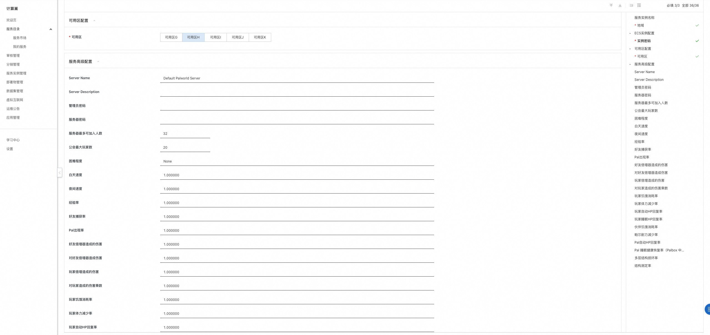
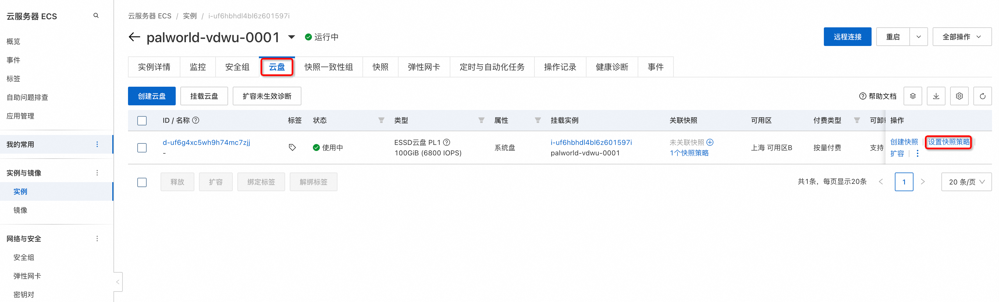

3分钟部署幻兽帕鲁联机服务
概述
幻兽帕鲁是Pocketpair开发的一款开放世界生存制作游戏，游戏于2024年1月18日发行抢先体验版本。游戏中，玩家可以在广阔的世界中收集神奇的生物“帕鲁”，派他们进行战斗、建造、做农活，工业生产等。本文介绍如何在阿里云计算巢控制台，快速部署幻兽帕鲁联机服务，实现和朋友一起联机游戏。
预计部署时间1~2分钟，有任何问题请查看文档底部的微信二维码，进群交流～
帕鲁服务端更新
自动更新
进入到运维管理->更新服务端版本
手动部署
参考文档 https://developer.aliyun.com/article/1428087
计费说明
幻兽帕鲁联机服务在计算巢上的费用主要涉及：所选vCPU与内存规格、磁盘容量、公网带宽 计费方式包括：包年包月、按量付费（小时） 预估费用在创建实例时可实时看到。
创建云服务器
第一步：选择配置
- 服务实例名称（如无特殊要求，保持默认即可）；
- 选择部署地域（可以选择离自己最近的城市，如无特殊要求，保持默认即可）；
- 选择付费时长（一般选择包月，三个月的优惠幅度更大）；
- 选择配置，一般来说配置越高越流畅。这游戏比较吃内存，所以内存尽量在16G以上（Pocketpair官方的推荐配置是4核16G，详见：Palworld tech guide，CPU选4核即可，带宽方面推荐不限流量的固定带宽，延时低，畅玩体验更佳。 这里阿里云也根据游戏人数不同推荐了几款配置，大家按需即可:
| 套餐名 | 说明 |
|---|---|
| 支持4-8个玩家 | e系列 4核16G，3M带宽不限流量 |
| 支持10-16个玩家 | u1系列 4核32G，10M带宽不限流量 |
| 自定义套餐 | 可自由选择ECS配置，适合高阶DIY玩家 |
- 配置服务器密码（记住你的密码，后面要用）；
- 配置可用区（如无特殊要求，保持默认即可）。
- 在高级配置栏中配置联机服务的参数（不修改则使用默认值）。  ⠀配置完成之后，点击下一步，确认提交订单。
第二步：创建服务
- 在服务确认页面，勾选同意服务条款，点击“立即创建”，后面就是付款流程。
- 当出现提交成功提示，说明服务已经开始创建，点击“去列表查看”，可以看到服务正在部署中。
第三步：进入实例详情
- 服务不到1分钟即可完成创建，当服务的状态变成“已部署”，点击服务实例ID进入服务详情。
- 到这一步的时候，帕鲁的服务端安装程序已经预置在服务的镜像里了，无需手动复制，非常方便。
- 看到“幻兽帕鲁服务器地址端口”，这就是你搭建服务器的IP地址了，复制这个地址用于下一步操作。
登录游戏
前置条件：您首先需要在Steam购买幻兽帕鲁（Palworld）。
- 登录您的Steam账号。

-
在“库”中找到幻兽帕鲁，并开始游戏。

-
在游戏菜单选择“加入多人游戏（专用服务器）”
-
让玩家输入您已部署的计算巢服务实例的地址端口即可畅快开玩～
至此，您已经成功搭建了幻兽帕鲁 Dedicated Server ，请和您的朋友在此中一起畅快游玩吧～
Linux服务器
替换存档
参考幻兽帕鲁服务器存档拷贝教程手动替换
清除存档（回档）
存档清除后，重新启动游戏后将会自动重新开始新游戏。 参考教程：清除存档
修改配置
自动修改配置
-
使用计算巢提供的变配服务实例功能自动修改:
-
修改配置参数值后点击确定开始变配：
手动修改配置
- 远程连接ECS实例
- 编辑文件
# 修改复制文件到目标目录
cp /home/ecs-assist-user/.steam/SteamApps/common/PalServer/DefaultPalWorldSettings.ini /home/ecs-assist-user/.steam/SteamApps/common/PalServer/Pal/Saved/Config/LinuxServer/PalWorldSettings.ini
# 执行修改配置文件的命令
nano --softwrap /home/ecs-assist-user/.steam/SteamApps/common/PalServer/Pal/Saved/Config/LinuxServer/PalWorldSettings.ini
如果不熟悉如何操作，请参考教程。
移动光标找到要修改的位置进行编辑。编辑完成后按Ctrl+X退出，编辑器会询问是否保存修改，输入Y确认保存。 编辑器提示保存的文件名，回车即可。
# 修改完成后重启服务
sudo systemctl restart pal-server
配置文件参数说明:
| 参数 | 英文 | 机翻 |
|---|---|---|
| DayTimeSpeedRate | Day time speed | 白天速度 |
| NightTimeSpeedRate | Night time speed | 夜间速度 |
| ExpRate | EXP rate | 经验率 |
| PalCaptureRate | Pal capture rate | 好友捕获率 |
| PalSpawnNumRate | Pal appearance rate | Pal出现率 |
| PalDamageRateAttack | Damage from pals multipiler | 好友倍增器造成的伤害 |
| PalDamageRateDefense | Damage to pals multipiler | 对好友倍增器造成伤害 |
| PlayerDamageRateAttack | Damage from player multipiler | 玩家倍增造成的伤害 |
| PlayerDamageRateDefense | Damage to player multipiler | 对玩家造成的伤害乘数 |
| PlayerStomachDecreaceRate | Player hunger depletion rate | 玩家饥饿消耗率 |
| PlayerStaminaDecreaceRate | Player stamina reduction rate | 玩家体力减少率 |
| PlayerAutoHPRegeneRate | Player auto HP regeneration rate | 玩家自动HP回复率 |
| PlayerAutoHpRegeneRateInSleep | Player sleep HP regeneration rate | 玩家睡眠HP回复率 |
| PalStomachDecreaceRate | Pal hunger depletion rate | 伙伴饥饿消耗率 |
| PalStaminaDecreaceRate | Pal stamina reduction rate | 帕尔耐力减少率 |
| PalAutoHPRegeneRate | Pal auto HP regeneration rate | Pal自动HP回复率 |
| PalAutoHpRegeneRateInSleep | Pal sleep health regeneration rate (in Palbox) | Pal 睡眠健康恢复率（Palbox 中） |
| BuildObjectDamageRate | Damage to structure multipiler | 多层结构损坏 |
| BuildObjectDeteriorationDamageRate | Structure determination rate | 结构测定率 |
| CollectionDropRate | Getherable items multipiler | 可收集物品倍增器 |
| CollectionObjectHpRate | Getherable objects HP multipiler | 可收集的物体 HP 倍增器 |
| CollectionObjectRespawnSpeedRate | Getherable objects respawn interval | 可收集物体的重生间隔 |
| EnemyDropItemRate | Dropped Items Multipiler | 掉落物品倍增器 |
| DeathPenalty | Death penalty None : No lost, Item : Lost item without equipment, ItemAndEquipment : Lost item and equipment, All : Lost All item, equipment, pal(in inventory) | 死刑 None : 没有丢失， Item : 丢失的没有装备的物品， ItemAndEquipment : 丢失的物品和装备， All : 丢失所有物品、装备、朋友（库存中） |
| GuildPlayerMaxNum | Max player of Guild | 公会最大玩家数 |
| PalEggDefaultHatchingTime | Time(h) to incubate massive egg | 孵化大蛋的时间(h) |
| ServerPlayerMaxNum | Maximum number of people who can join the server | 服务器最多可加入人数 |
| ServerName | Server name | 服务器名称 |
| ServerDescription | Server description | 服务器描述 |
| AdminPassword | AdminPassword | 管理员密码 |
| ServerPassword | Set the server password | 设置服务器密码 |
| PublicPort | Public port number | 公共端口号 |
| PublicIP | Public IP | 公共IP |
| RCONEnabled | Enable RCON | 启用RCON |
| RCONPort | Port number for RCON | RCON 的端口号 |
Windows服务器
连接服务器
- 在计算巢服务实例详情页中点击远程连接，免密登录。
- 使用公网链接，密码为创建服务实例时输入的密码。
替换存档
参考幻兽帕鲁服务器存档拷贝教程手动替换
清除存档（回档）
存档清除后，重新启动游戏后将会自动重新开始新游戏。 参考教程：清除存档
修改配置
- 复制 C:\Program Files\PalServer\steam\steamapps\common\PalServer\DefaultPalWorldSettings.ini 的内容(如下)到
C:\Program Files\PalServer\steam\steamapps\common\PalServer\Pal\Saved\Config\WindowsServer\PalWorldSettings.ini ，然后根据需求修改。
; This configuration file is a sample of the default server settings.
; Changes to this file will NOT be reflected on the server.
; To change the server settings, modify Pal/Saved/Config/WindowsServer/PalWorldSettings.ini.
[/Script/Pal.PalGameWorldSettings]
OptionSettings=(Difficulty=None,DayTimeSpeedRate=1.000000,NightTimeSpeedRate=1.000000,ExpRate=1.000000,PalCaptureRate=1.000000,PalSpawnNumRate=1.000000,PalDamageRateAttack=1.000000,PalDamageRateDefense=1.000000,PlayerDamageRateAttack=1.000000,PlayerDamageRateDefense=1.000000,PlayerStomachDecreaceRate=1.000000,PlayerStaminaDecreaceRate=1.000000,PlayerAutoHPRegeneRate=1.000000,PlayerAutoHpRegeneRateInSleep=1.000000,PalStomachDecreaceRate=1.000000,PalStaminaDecreaceRate=1.000000,PalAutoHPRegeneRate=1.000000,PalAutoHpRegeneRateInSleep=1.000000,BuildObjectDamageRate=1.000000,BuildObjectDeteriorationDamageRate=1.000000,CollectionDropRate=1.000000,CollectionObjectHpRate=1.000000,CollectionObjectRespawnSpeedRate=1.000000,EnemyDropItemRate=1.000000,DeathPenalty=All,bEnablePlayerToPlayerDamage=False,bEnableFriendlyFire=False,bEnableInvaderEnemy=True,bActiveUNKO=False,bEnableAimAssistPad=True,bEnableAimAssistKeyboard=False,DropItemMaxNum=3000,DropItemMaxNum_UNKO=100,BaseCampMaxNum=128,BaseCampWorkerMaxNum=15,DropItemAliveMaxHours=1.000000,bAutoResetGuildNoOnlinePlayers=False,AutoResetGuildTimeNoOnlinePlayers=72.000000,GuildPlayerMaxNum=20,PalEggDefaultHatchingTime=72.000000,WorkSpeedRate=1.000000,bIsMultiplay=False,bIsPvP=False,bCanPickupOtherGuildDeathPenaltyDrop=False,bEnableNonLoginPenalty=True,bEnableFastTravel=True,bIsStartLocationSelectByMap=True,bExistPlayerAfterLogout=False,bEnableDefenseOtherGuildPlayer=False,CoopPlayerMaxNum=4,ServerPlayerMaxNum=32,ServerName="Default Palworld Server",ServerDescription="",AdminPassword="",ServerPassword="",PublicPort=8211,PublicIP="",RCONEnabled=False,RCONPort=25575,Region="",bUseAuth=True,BanListURL="https://api.palworldgame.com/api/banlist.txt")
- 到ECS详情页重启ECS实例使配置生效
节约成本
前提条件： 部署服务时计费方式选择按量付费
使用完毕后可以通过下述两种方式来节省成本：
- 若只是暂时不使用了可以在运维管理页面选择关机（节省停机模式），此时部分资源会被回收并停止收费，以降低相关费用、节约使用成本，下次使用再进行开机，操作如下：
- 若彻底不再使用了可以直接将服务实例删除，后续就不会再产生费用。需要注意：如果创建时是选择的包年包月，则需要将服务实例先转为按量付费。
游戏存档
手动存档
方式1：ECS快照
- 登录计算巢控制台，进入服务管理页面，点击服务实例ID，进入服务实例详情页面点击资源，找到ECS实例并进入详情页面。
- 点击云盘，然后给系统盘创建快照。
方式2：手动执行
自动存档
ECS快照策略
- 登录计算巢控制台，进入服务管理页面，点击服务实例ID，进入服务实例详情页面点击资源，找到ECS实例并进入详情页面。
- 点击云盘，然后给系统盘创建快照策略。 
- 设置自动快照策略，点击新建自动快照策略。
- 新建自动快照策略，设置快照策略名称，快照周期，快照保留天数，点击确定启用自动快照策略，完成自动快照策略的创建。
- 启用成功后可以看到已关联一个快照策略：
恢复存档
参考文档：使用快照回滚云盘 1. 停止ECS实例。 2. 实例停止后，点击快照进入详情页，然后选择对应时间点的快照后点击回滚云盘。 3. 勾选回滚后立即启动实例，等待回滚云盘任务执行完成，启动ECS实例。 4. 回滚后实例待状态变为运行中，可以重新连接游戏。
删除存档
rm /home/ecs-assist-user/.steam/SteamApps/common/PalServer/Pal/Saved/SaveGames
修改完成后重启服务
sudo systemctl restart pal-server
官方支持
您有任何问题或者建议，可以使用微信或钉钉扫描下方二维码，加人我们的官方服务群，我们将非常欢迎您的建议和反馈～
常见问题
删除时提示无法删除，存在预付费资源
注意：首购的包年包月实例退款成功后，再次购买没有优惠。
-
拿ECS实例ID到用户中心退款
-
退款完成后再次删除计算巢服务实例
进入游戏提示：No password has been entered.
按以下流程操作解决：
变配服务实例报错
如果出现类似的报错： {code: null, message: "ROS stack xxx ROLLBACK_COMPLETE: Resource UPDATE failed: StackValidationFailed: resources.InstanceRunCommand: i-xxx are not running. Command invocation only support running instances.", requestId: xxx} 解决方案：需要先重启下ECS服务器，待ecs服务器启动完成后，再进行变配。